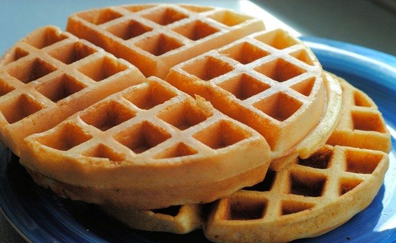

Waffle

Ingredientes
- 1 xícara de farinha de trigo
- 1 colher (chá) de fermento em pó
- 1/2 colher (chá) de sal
- 1 colher (sopa) de manteiga derretida
- 1 colher (chá) de açúcar
- 1 xícara de leite
- 1 gema
- 1 clara
Preparo
- Peneire todos os ingredientes secos.
- Acrescente a gema, o leite, a manteiga derretida aos ingredientes secos e misture-os bem.
- Junte a clara batida em neve, incorporando delicadamente.
- Despeje aproximadamente 1/2 xícara de chá de massa na forma de Waffle quente.
- A luz do indicador deverá estar apagada, quando a massa for colocada a luz acenderá.
- Quando a luz apagar novamente, o Waffle está pronto.
- Você poderá servir estes Waffles com geleia ou até mesmo requeijão.